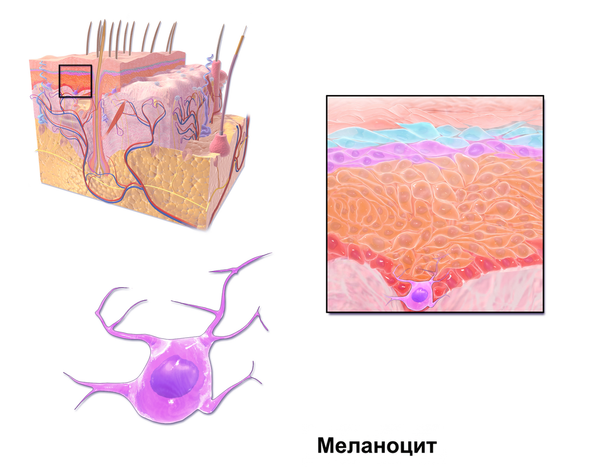

Тема 1
Строение кожи. Первичные и вторичные морфологические элементы. Функции кожи. Принципы диагностики и лечения кожных заболеваний. Пиодермия
Строение и функции кожи, морфологические элементы, диагностика и лечение кожных заболеваний.